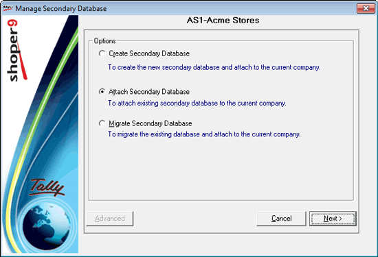
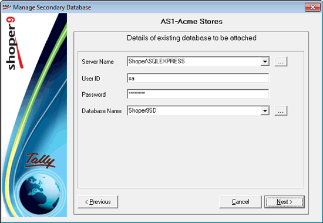
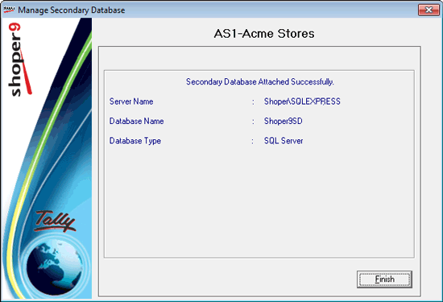

Select the option Attach Secondary Database to proceed.

On clicking Next, the following window is displayed, where the details of the secondary database to be attached are entered.

Server Name: Select the name of the server, where the secondary database is available.
User ID: Enter the user ID.
Password: Enter the password for the user.
Database Name: Enter the name of the secondary database to be attached to the current company.
On clicking Next, the secondary database is attached to the current company and the following window is displayed.

Server Name: The name of the server is displayed.
Database Name: The name of the secondary database attached is displayed.
Database Type: The database type, e.g., SQL Server, is displayed.